Agent mode
- Plans autonomously and runs multi-turn tool loops
- Reads and writes files, runs the terminal, opens editors
- Every change goes through approval cards; cancel any time
- A live task list tracks execution progress
CodeAgent integrates deeply with the IntelliJ Platform: a local ContextEngine indexes your entire repository while a self-deployable agent backend drives the multi-turn tool loop — retrieval, edits, terminal, diff and rollback, every step under your control.

From read-only analysis to fully hands-on coding — you decide the trust level, and switch any time.
CodeAgent is not a black box: everything the agent does streams into the panel as tool cards, and consequential actions wait for your approval before they run.
The backend drives a bounded multi-turn tool loop and streams the whole process back to the panel — retrieval, file reads, search, edits, file creation, terminal runs.
File writes and terminal commands go through an approval flow by default, with approval cards inline in the conversation — read them, then let them run. Ask mode stays read-only by construction.
Agent Edits collects every file change from a run and reuses IntelliJ's native Diff component for review. Undo edits one by one, or keep / discard everything in one click.
Conversations are organized into per-project threads with pinning, unread counts and Markdown import/export. Long sessions navigate request by request — new activity never drags you away from what you're reading.
From context retrieval to extension mechanisms, every layer the agent needs is built as a real, configurable, auditable capability.
Lexical, symbol, path, code-graph and Git-lineage retrieval run fully locally with no model required; semantic retrieval is an explicit opt-in.
Repository rules stay always-on; skills are selected explicitly per task. The JVM validates, the backend composes them into prompts.
Extend the tool surface with MCP servers — OAuth metadata discovery and dynamic client registration included, compatible with common config formats.
Plugins are bounded JSON manifests, not executable code: version, integrity and granted capabilities are validated before activation.
Bring your own Anthropic, OpenAI or AWS Bedrock keys — stored in JetBrains Password Safe, removable at any time.
Long-running commands live in project-scoped process sessions: launch, read, write, wait, kill — output capped, mutations approval-gated.
The Git page reads the real index and working tree with explicit commit confirmation; Image Canvas previews project images and attaches them to chats.
Read-only session share links, operator notifications and subscription quotas — shown honestly as unavailable when the backend isn't configured.
The IDE plugin is a capability gateway, a local sidecar owns the retrieval index, and a deployable backend centralizes prompts and model credentials — each layer does exactly its own job.
The more capable the agent, the more the boundaries matter. CodeAgent writes "under control" into the architecture — not into the tagline.
OIDC access and refresh tokens live in JetBrains Password Safe — plugin settings keep only expiry metadata. Model and integration credentials remain on the deployed backend; the IDE holds none.
ContextEngine's index is fully local. Only the repository context, rules, skills and messages selected for the current run are sent — to the backend you configured. What goes where is always explicit.
File edits carry per-edit rollback paths and checkpoints restore pre-run state. We don't claim automatic rollback of terminal side effects — promising only what we can guarantee is a product principle.
Settings shows real health checks and real model/tool discovery — a configured URL is not treated as an online backend. Unconfigured cloud capabilities say "unavailable", never "success".
Built on the IntelliJ Platform with compatibility continuously checked by JetBrains Plugin Verifier. IntelliJ IDEA and PyCharm are verified on real installs; verification of the remaining products is in progress.
One Docker command for the backend, install the plugin ZIP, press Ctrl+Alt+I — CodeAgent takes it from there.